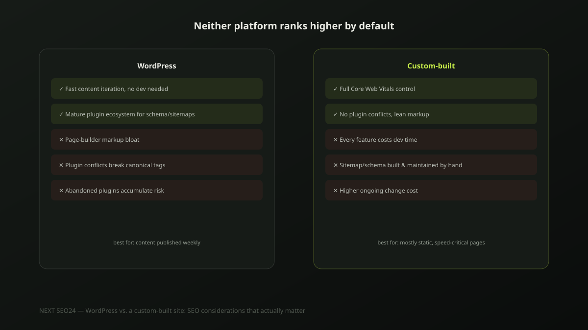

WordPress vs. a custom-built site: SEO considerations that actually matter
"Should we rebuild in a custom stack for better SEO?" comes up often enough that it's worth answering directly: the platform isn't what determines your rankings. Some of the fastest, highest-ranking sites in the world run on WordPress; some of the slowest, worst-performing ones do too. Here's what actually matters, and the honest question that should drive the decision.
This isn't really a "which is better" question
Both platforms can rank #1 for competitive terms, and both can fail badly on Core Web Vitals and crawlability. The actual differences aren't about which one Google prefers — Google has no platform preference at all — they're about what each makes easy, what each makes hard, and which of those trade-offs fits how your specific business actually operates day to day.
Where WordPress genuinely helps
- A mature plugin ecosystem. Structured data, XML sitemaps, redirect management and meta tag control are all solved problems with well-tested plugins — you're not building this tooling from scratch.
- Fast content iteration. A marketing team can publish, update and restructure content without needing a developer for every change — genuinely valuable for a site that blogs weekly or runs frequent campaigns.
- A large support and documentation base. Most technical SEO problems on WordPress have already been solved and documented publicly, which shortens troubleshooting time considerably.
Where WordPress genuinely hurts, in practice
- Page-builder bloat. Heavy visual builders (the kind that generate deeply nested
<div>wrappers for every element) routinely produce markup that's several times larger than necessary, directly hurting load speed. - Plugin conflicts. Two SEO plugins active simultaneously, or a caching plugin serving stale canonical tags, is one of the most common causes of indexability bugs we find during audits.
- Abandoned plugin accumulation. Plugins installed for a since-forgotten reason, never removed, each add page weight and a potential security or compatibility risk with every core update.
Where a custom-built site genuinely helps
Full control over every line of markup and every request the page makes translates directly into Core Web Vitals headroom that's genuinely harder to reach on a plugin-dependent stack — no page builder overhead, no plugin conflicts, no legacy code from a feature nobody uses anymore. For a site where performance is the primary competitive lever, that control is real and valuable.
Where a custom-built site genuinely hurts
Every feature that a WordPress plugin solves in an afternoon — a sitemap, a redirect rule, a schema block — has to be built and then maintained by a developer on a custom stack. For a site that publishes content constantly, this ongoing dev dependency is a real, recurring cost that a marketing-led WordPress site simply doesn't carry. The performance ceiling is higher, but so is the cost of reaching and maintaining it.
The real question: who maintains this site day to day?
If a marketing team is publishing and restructuring content weekly, WordPress's editorial speed usually outweighs the performance ceiling a custom build could theoretically reach — content velocity matters more than a few hundred milliseconds most of the time. If the site is largely static — a handful of service pages that rarely change, built for maximum speed and minimal ongoing content work — a lean custom build's performance advantage becomes the more relevant factor. Answer that question honestly before the platform question.
When a rebuild is actually worth it
A migration is worth the cost when Core Web Vitals stay consistently poor despite genuine optimization effort — proper caching, image compression, a lean theme, plugin cleanup — not as a first response to a slow site. It's also worth it when plugin conflicts have become a recurring, time-consuming maintenance burden rather than an occasional issue. It's rarely worth it purely on the promise of better SEO; the platform switch alone doesn't move rankings, and a badly executed custom build can end up slower than the WordPress site it replaced. If you're mid-migration or considering one, our website migration SEO checklist covers the redirect mapping and launch process either direction requires.
A practical checklist for either path
- On WordPress: audit installed plugins and remove anything unused, not just deactivated
- On WordPress: confirm only one SEO plugin is active, handling one job each, not overlapping
- On WordPress: check whether the page builder's output can be simplified or replaced with lighter blocks
- On a custom build: confirm sitemap, redirects and structured data are actually being generated and kept current, not a one-time setup
- On either: measure real Core Web Vitals data before deciding a platform switch is the fix
If you're weighing a WordPress cleanup against a full rebuild, send us your site — we'll give you an honest read on which actually solves your specific problem.
Frequently asked questions
Is WordPress bad for SEO?
No. WordPress itself isn't the problem — some of the highest-ranking sites in the world run on it. The SEO issues attributed to WordPress almost always come from plugin conflicts, a heavy page-builder generating bloated markup, or an accumulation of unused plugins, not from the platform's core code.
Will a custom-built site automatically rank higher than WordPress?
No. A custom build gives you more direct control over performance and markup, but it doesn't rank better by default — a poorly built custom site can be just as slow and messy as a poorly configured WordPress site. Ranking comes from content quality, technical execution and authority, not the platform choice itself.
When is it actually worth migrating from WordPress to a custom build?
When the content is largely static and rarely changes, when Core Web Vitals are consistently failing despite genuine optimization effort within WordPress, or when plugin conflicts have become a recurring maintenance burden. It's rarely worth it for a site with a marketing team publishing new content weekly — the ongoing dev cost of a custom CMS usually outweighs the performance gain for that use case.
Weighing a platform decision for your site?
Tell us how your site is actually maintained day to day — we'll give you a straight answer on whether WordPress cleanup or a custom rebuild fits better.
Chat on WhatsApp →